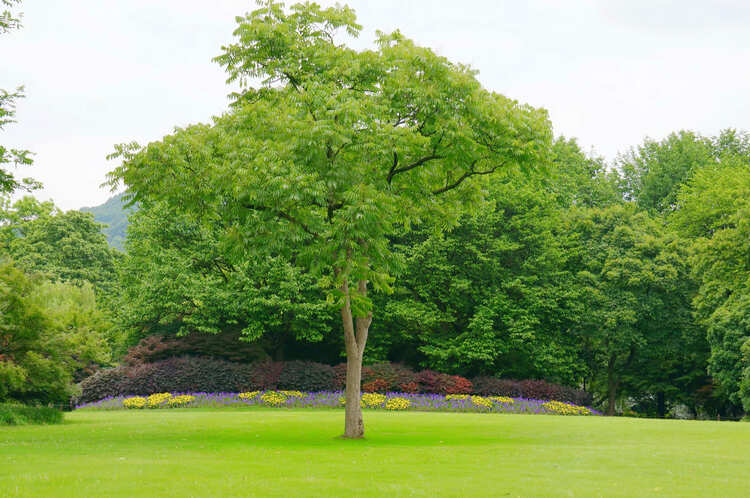

Nuestros trabajos
Poda de formación
La poda de formación se enfoca en dar al árbol una estructura sólida y una apariencia atractiva desde temprana edad.
Poda de mantenimiento
La poda de mantenimiento implica la eliminación de ramas enfermas o dañadas para promover la salud general del árbol. Por otro lado, esta poda también se centra en reducir el tamaño del árbol sin comprometer su vitalidad.